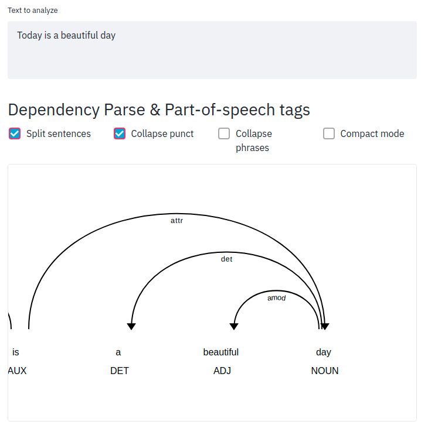
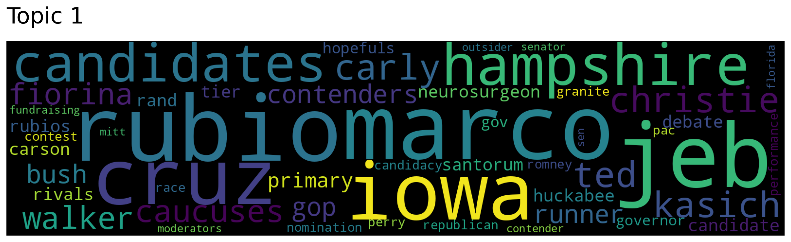
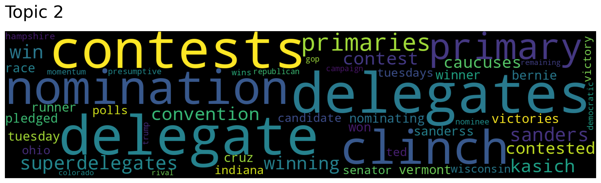
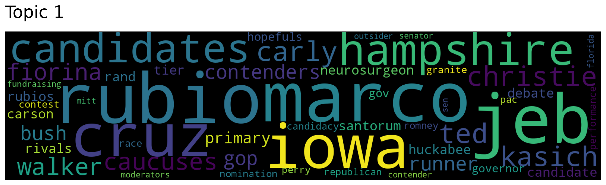
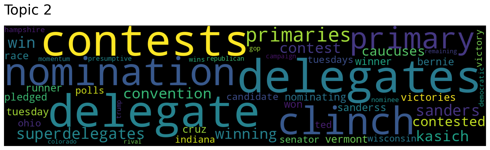

6.6. Natural Language Processing#
This section some tools to process and work with text.
6.6.1. TextBlob: Processing Text in One Line of Code#
Show code cell content
!pip install textblob
Show code cell content
!python -m textblob.download_corpora
To quickly analyze text, including determining its sentiment, tokenization, noun phrase and word frequency analysis, and spelling correction, use TextBlob.
To use TextBlob, start with creating a new instance of the TextBlob class with the text “Today is a beautiful day”.
from textblob import TextBlob
text = "Today is a beautiful day"
blob = TextBlob(text)
Tokenize words:
blob.words
WordList(['Today', 'is', 'a', 'beautiful', 'day'])
Extract noun phrases:
blob.noun_phrases
WordList(['beautiful day'])
Analyze sentiment:
blob.sentiment
Sentiment(polarity=0.85, subjectivity=1.0)
Count words:
blob.word_counts
defaultdict(int, {'today': 1, 'is': 1, 'a': 1, 'beautiful': 1, 'day': 1})
Correct spelling:
text = "Today is a beutiful day"
blob = TextBlob(text)
blob.correct()
TextBlob("Today is a beautiful day")
6.6.2. Convert Names into a Generalized Format#
Show code cell content
!pip install mlxtend
Names collected from different sources might have different formats. To convert names into the same format for further processing, use mlxtend’s generalize_names.
from mlxtend.text import generalize_names
generalize_names("Tran, Khuyen")
'tran k'
generalize_names("Khuyen Tran")
'tran k'
generalize_names("Khuyen Tran", firstname_output_letters=2)
'tran kh'
6.6.3. sumy: Summarize Text in One Line of Code#
Show code cell content
!pip install sumy
If you want to summarize text using Python or command line, try sumy.
The great things about sumy compared to other summarization tools are that it is easy to use and it allows you to use 7 different methods to summarize the text.
Below is how sumy summarizes the article How to Learn Data Science (Step-By-Step) in 2020 at DataQuest.
$ sumy lex-rank --length=10 --url=https://www.dataquest.io/blog/learn-data-science/
!sumy lex-rank --length=10 --url=https://www.dataquest.io/blog/learn-data-science/
So how do you start to learn data science?
If I had started learning data science this way, I never would have kept going.
I learn when I’m motivated, and when I know why I’m learning something.
There’s some science behind this, too.
If you want to learn data science or just pick up some data science skills, your first goal should be to learn to love data.
But it’s important to find that thing that makes you want to learn.
By working on projects, you gain skills that are immediately applicable and useful, because real-world data scientists have to see data science projects through from start to finish, and most of that work is in fundamentals like cleaning and managing the data.
And so on, until the algorithm worked well.
Find people to work with at meetups.
For more information on these, you can take a look at our Data Scientist learning path , which is designed to teach all of the important data science skills for Python learners.
6.6.4. Spacy_streamlit: Create a Web App to Visualize Your Text in 3 Lines of Code#
Show code cell content
!pip install spacy-streamlit
If you want to quickly create an app to visualize the structure of a text, try spacy_streamlit.
To understand how to use spacy_streamlit, we add the code below to a file called streamlit_app.py:
%%writefile streamlit_app.py
import spacy_streamlit
models = ['en_core_web_sm']
text = "Today is a beautiful day"
spacy_streamlit.visualize(models, text)
On your terminal, type:
$ streamlit run streamlit_app.py
Output:
Show code cell content
!python -m spacy download en_core_web_sm
Show code cell source
!streamlit run streamlit_app.py
You can now view your Streamlit app in your browser.
Local URL: http://localhost:8501
Network URL: http://192.168.1.90:8501
^C
Stopping...
Click the URL and you should see something like below:

6.6.5. textacy: Extract a Contiguous Sequence of Words#
Show code cell content
!pip install spacy textacy
Show code cell content
!python -m spacy download en_core_web_sm
If you want to extract a contiguous sequence of words from a text, use textacy.ngrams.
import spacy
from textacy.extract import ngrams
nlp = spacy.load("en_core_web_sm")
text = nlp("Ice cream is a soft frozen food made with sweetened and flavored milk fat.")
# extract sequences of 3 words
[n.text for n in ngrams(text, n=3)]
['soft frozen food', 'sweetened and flavored', 'flavored milk fat']
6.6.6. Num2Words: Convert Number to Words#
Show code cell content
!pip install num2words
When data contains both a numerical value (2019) and a written expression (‘two thousand and nineteen’) that represent the same quantity, it’s essential for them to match for accurate NLP interpretation.
This can be achieved by using num2words, which helps convert numbers to their word equivalent.
from num2words import num2words
num2words(2019)
'two thousand and nineteen'
num2words(2019, to='ordinal')
'two thousand and nineteenth'
num2words(2019, to='ordinal_num')
'2019th'
num2words(2019, to='year')
'twenty nineteen'
The library can also generate ordinal numbers and support multiple languages!
num2words(2019, lang='vi')
'hai nghìn lẻ mười chín'
num2words(2019, lang='es')
'dos mil diecinueve'
6.6.7. Preprocess Text in One Line of Code with Texthero#
Show code cell content
!pip install texthero
Processing text in a DataFrame often involves writing lengthy code. Texthero simplifies this by enabling one-line preprocessing, including:
filling missing values
converting upper case to lower case
removing digits
removing punctuation
removing stopwords
removing whitespace
import numpy as np
import pandas as pd
import texthero as hero
text = [
"Today is a beautiful day",
"There are 3 ducks in this pond",
"This is. very cool.",
np.nan,
]
df = pd.DataFrame({"text": text})
df.text.pipe(hero.clean)
[nltk_data] Downloading package stopwords to
[nltk_data] /Users/khuyentran/nltk_data...
[nltk_data] Unzipping corpora/stopwords.zip.
0 today beautiful day
1 ducks pond
2 cool
3
Name: text, dtype: object
You can also create a custom cleaning pipeline by chaining different processing methods.
(
df.text
.pipe(hero.fillna)
.pipe(hero.remove_punctuation)
.pipe(hero.remove_stopwords)
.pipe(hero.remove_whitespace)
)
0 Today beautiful day
1 There 3 ducks pond
2 This cool
3
Name: text, dtype: object
6.6.8. texthero: Reduce Dimension and Visualize Text in One Line of Code#
Show code cell content
!pip install texthero gdown
If you want to visualize the text column in your pandas DataFrame in 2D, you first need to clean, encode, and reduce the dimension of your text, which could be time-consuming.
Wouldn’t it be nice if you can do all of the steps above in 2 lines of code? texthero allows you to do exactly that.
In the code below, I use texthero to visualize the descriptions of CNN news downloaded from Kaggle. Each point is an article and is colored by its category.
import pandas as pd
import texthero as hero
!pip install gdown
import gdown
gdown.download('https://drive.google.com/uc?id=1QPGCZ8mud5ptt8qJR79XQ6KoQnJuT-4D')
df = pd.read_csv("small_CNN.csv")
df["pca"] = df["Description"].pipe(hero.clean).pipe(hero.tfidf).pipe(hero.pca)
import matplotlib.pyplot as plt
plt.figure(figsize=(10, 3))
hero.scatterplot(df, col="pca", color="Category", title="CNN News")
<Figure size 1000x300 with 0 Axes>

6.6.9. wordfreq: Estimate the Frequency of a Word in 36 Languages#
Show code cell content
!pip install wordfreq
If you want to look up the frequency of a certain word in your language, try wordfreq.
wordfreq supports 36 languages. wordfreq even covers words that appear at least once per 10 million words.
import matplotlib.pyplot as plt
import seaborn as sns
from wordfreq import word_frequency
word_frequency("eat", "en")
0.000135
word_frequency("the", "en")
0.0537
sentence = "There is a dog running in a park"
words = sentence.split(" ")
word_frequencies = [word_frequency(word, "en") for word in words]
sns.barplot(words, word_frequencies)
plt.show()
/home/khuyen/book/venv/lib/python3.8/site-packages/seaborn/_decorators.py:36: FutureWarning: Pass the following variables as keyword args: x, y. From version 0.12, the only valid positional argument will be `data`, and passing other arguments without an explicit keyword will result in an error or misinterpretation.
warnings.warn(
6.6.10. newspaper3k: Extract Meaningful Information From an Articles in 2 Lines of Code#
Show code cell content
!pip install newspaper3k nltk
If you want to quickly extract meaningful information from an article in a few lines of code, try newspaper3k.
from newspaper import Article
import nltk
nltk.download("punkt")
url = "https://mathdatasimplified.com/2023/05/08/build-an-efficient-data-pipeline-is-dbt-the-key/"
article = Article(url)
article.download()
article.parse()
article.title
'What is dbt (data build tool) and When should you use it?'
print(article.publish_date)
2023-05-08 00:00:00
article.top_image
'https://mathdatasimplified.com/wp-content/uploads/2023/05/dbt-pros-and-cons-6.png'
article.nlp()
print(article.summary)
One tool that has gained popularity in recent years for managing data pipelines is dbt (data build tool).
When Should You Consider dbtYou should consider using dbt when:You have a data warehouse: dbt is an effective tool for organizing, transforming, and testing data in a data warehouse environment.
Your data changes frequently: dbt’s snapshot allows you to track changes in data over time.
Other tools are needed for tasks such as data extraction, data cleansing, and data loading.
You want to visualize your data: dbt is not a data visualization tool.
article.keywords
['tool',
'changes',
'build',
'dbt',
'model',
'documentation',
'sql',
'data',
'select',
'models',
'property_type']
6.6.11. Questgen.ai: Question Generator in Python#
Show code cell content
!pip install git+https://github.com/ramsrigouthamg/Questgen.ai
!pip install git+https://github.com/boudinfl/pke.git
!python -m nltk.downloader universal_tagset
!python -m spacy download en
Show code cell content
!wget https://github.com/explosion/sense2vec/releases/download/v1.0.0/s2v_reddit_2015_md.tar.gz
!tar -xvf s2v_reddit_2015_md.tar.gz
It can be time-consuming to generate questions for a document. Wouldn’t it be nice if you can automatically generate questions using Python? That is when Questgen.ai comes in handy.
With a few lines of code, the questions for your document are automatically generated.
from pprint import pprint
import nltk
nltk.download('stopwords')
from Questgen import main
payload = {
"input_text": """The weather today was nice so I went for a walk. I stopped for a quick chat with my neighbor.
It turned out that my neighbor just got a dog named Pepper. It is a black Labrador Retriever."""
}
With Questgen.ai, you can either generate boolean questions:
qe = main.BoolQGen()
output = qe.predict_boolq(payload)
pprint(output)
{'Boolean Questions': ['Is there a dog in my neighborhood?',
"Is pepper my neighbor's dog?",
'Is pepper the same as a labrador?'],
'Count': 4,
'Text': 'The weather today was nice so I went for a walk. I stopped for a '
'quick chat with my neighbor.\n'
' It turned out that my neighbor just got a dog named Pepper. It '
'is a black Labrador Retriever.'}
… or generate FAQ questions:
output = qg.predict_shortq(payload)
pprint(output)
Running model for generation
{'questions': [{'Question': 'What was the purpose of the stop?', 'Answer': 'chat', 'id': 1, 'context': 'I stopped for a quick chat with my neighbor.'}, {'Question': 'Who got a dog named Pepper?', 'Answer': 'neighbor', 'id': 2, 'context': 'It turned out that my neighbor just got a dog named Pepper. I stopped for a quick chat with my neighbor.'}]}
{'questions': [{'Answer': 'chat',
'Question': 'What was the purpose of the stop?',
'context': 'I stopped for a quick chat with my neighbor.',
'id': 1},
{'Answer': 'neighbor',
'Question': 'Who got a dog named Pepper?',
'context': 'It turned out that my neighbor just got a dog '
'named Pepper. I stopped for a quick chat with my '
'neighbor.',
'id': 2}],
'statement': 'The weather today was nice so I went for a walk. I stopped for '
'a quick chat with my neighbor. It turned out that my neighbor '
'just got a dog named Pepper. It is a black Labrador Retriever.'}
6.6.12. Word Ninja: Slice Your Lumped-Together Words#
Show code cell content
!pip install wordninja
If you want to slice your lumped-together words, use Word Ninja. You will be surprised how well it works.
Below are some examples.
import wordninja
wordninja.split("honeyinthejar")
['honey', 'in', 'the', 'jar']
wordninja.split("ihavetwoapples")
['i', 'have', 'two', 'apples']
wordninja.split("aratherblusterday")
['a', 'rather', 'bluster', 'day']
6.6.13. textstat: Calculate Statistics From Text#
Show code cell content
!pip install textstat
If you want to get some important statistics from text such as readability score or reading time, use textstat.
To get the readability score, use automated_readability_index. The ARI (Automated Readability Index) approximates the grade label needed to comprehend the text. If the ARI is 10.8 then the grade level needed to comprehend the text is 10th to 11th grade
import textstat
text = "The working memory system is a form of conscious learning. But not all learning is conscious. Psychologists have long marveled at children’s ability to acquire perfect pronunciation in their first language or recognize faces."
textstat.automated_readability_index(text)
10.8
To measure the reading time in seconds, use reading_time. The reading time of the text above is 2.82s.
textstat.reading_time(text, ms_per_char=14.69)
2.82
6.6.14. RapidFuzz: Rapid String Matching in Python#
Show code cell content
!pip install rapidfuzz
If you want to find strings that are similar to another string above a certain threshold, use RapidFuzz. RapidFuzz is a Python library that allows you to quickly match strings.
from rapidfuzz import fuzz
Calculates the normalized Indel distance between 2 strings
fuzz.ratio("Let's meet at 10 am tomorrow", "Let's meet at 10 am tommorrow")
98.24561403508771
fuzz.ratio("here you go", "you go here")
54.54545454545454
Sort the words in the strings and calculates the fuzz.ratio between them
fuzz.token_sort_ratio("here you go", "you go here")
100.0
6.6.15. Checklist: Create Data to Test Your NLP Model#
Show code cell content
!pip install checklist torch
It can be time-consuming to create data to test edge cases of your NLP model. If you want to quickly create data to test your NLP models, use Checklist.
In the code below, I use Checklist’s Editor to create multiple examples of negation in one line of code.
import checklist
from checklist.editor import Editor
editor = Editor()
editor.template("{mask} is not {a:pos} option.", pos=["good", "cool"], nsamples=5).data
['that is not a good option.',
'War is not a cool option.',
'Windows is not a good option.',
'Facebook is not a cool option.',
'Sleep is not a cool option.']
editor.template("{mask} is not {a:neg} option.", neg=["bad", "awful"], nsamples=5).data
['There is not a bad option.',
'Closure is not an awful option.',
'TPP is not a bad option.',
'Security is not an awful option.',
'Change is not an awful option.']
6.6.16. Top2Vec: Quick Topic Modeling in Python#
!pip install top2vec
If you want to quickly detect topics present in your text and generate jointly embedded topic, document, and word vectors, use Top2Vec.
In the code below, I use Top2Vec to quickly find topics and create a wordcloud of words in the first 3 topics.
from top2vec import Top2Vec
from sklearn.datasets import fetch_openml
news = fetch_openml("Fake-News")
text = news.data["text"].to_list()
model = Top2Vec(documents=text, speed="learn", workers=8)
2022-05-25 08:35:13,293 - top2vec - INFO - Pre-processing documents for training
2022-05-25 08:35:22,285 - top2vec - INFO - Creating joint document/word embedding
2022-05-25 08:53:03,023 - top2vec - INFO - Creating lower dimension embedding of documents
2022-05-25 08:53:23,522 - top2vec - INFO - Finding dense areas of documents
2022-05-25 08:53:23,656 - top2vec - INFO - Finding topics
model.get_num_topics()
82
(
a,
b
) = 1, 2
topic_words, word_scores, topic_nums = model.get_topics(3)
Returns:
topic_words: For each topic the top 50 words are returned, in order of semantic similarity to topic.
word_scores: For each topic the cosine similarity scores of the top 50 words to the topic are returned.
topic_nums: The unique index of every topic will be returned.
for topic in topic_nums:
model.generate_topic_wordcloud(topic)
 



6.6.17. Expanding English Contractions in Text#
Show code cell content
!pip install contractions
Contraction can cause issues when processing text. If you want to expand contractions using Python, use the library contractions
import contractions
sent = "I'm not sure, but I'd like to do it"
contractions.fix(sent)
'I am not sure, but I would like to do it'
6.6.18. inflect: Generate Plurals, Singulars, and Indefinite Articles#
Show code cell content
!pip install inflect
If you want to generate plurals, singulars, or indefinite articles from given words, use inflect.
import inflect
p = inflect.engine()
p.plural_noun('he')
'they'
p.plural_verb('sees')
'see'
p.gender("feminine")
p.singular_noun("they")
'she'
if p.compare_verbs('sees', 'see'):
print("same word")
same word
# Add the correct "a" or "an" for a given word
fruit1 = 'apple'
fruit2 = 'banana'
print(f"I got you {p.a(fruit1)} "
f"and {p.a(fruit2)}")
I got you an apple and a banana
6.6.20. Chroma: The Lightning-Fast Solution to Text Embeddings and Querying#
Show code cell content
!pip install chromadb
Semantic search uses embedding to understand the meaning of search queries instead of relying solely on keyword matches to locate documents.
Embedding is like a translator converting words into numbers so that computers can understand. Chroma makes it easy to create embeddings from documents and find similar results with a few lines of code.
In the code below, the documents with IDs 1 and 2 closely match the given query text.
import chromadb
client = chromadb.Client()
collection = client.get_or_create_collection("test")
collection.add(
documents=[
"A man is eating food.",
"A man is eating yellow noodles.",
"The girl is carrying a baby.",
"A man is riding a horse.",
],
ids=["1", "2", "3", "4"],
)
query_result = collection.query(
query_texts=["A man is eating pasta." ],
n_results=2
)
print(query_result)
{'ids': [['2', '1']], 'distances': [[0.5690374970436096, 0.5929027199745178]], 'metadatas': [[{}, {}]], 'embeddings': None, 'documents': [['A man is eating yellow noodles.', 'A man is eating food.']]}
6.6.21. Galatic: Clean and Analyze Massive Text Datasets#
Show code cell content
!pip install galactic-ai
If you want to clean, gain insights, and create embeddings from massive unstructured text datasets, use Galatic.
from galactic import GalacticDataset
filter_func = lambda x: len(x["content"]) < 1024
dataset = GalacticDataset.from_hugging_face_stream(
"tiiuae/falcon-refinedweb",
split="train",
filters=[filter_func],
dedup_fields=["content"],
max_samples=5000,
)
# Detect the language of the text
from collections import Counter
dataset.detect_language(field="content")
Counter(dataset["__language"])
Counter({'en': 4975,
'es': 7,
'fr': 7,
'de': 3,
'da': 2,
'ru': 1,
'nl': 1,
'pt': 1,
'sh': 1,
'eo': 1,
'ceb': 1})
# Get personal information from the text
dataset.detect_pii(
fields=["content"]
)
print("Email:", sum(dataset["__pii__email"]))
print("Phone:", sum(dataset["__pii__phone"]))
print("Username/Password:", sum(dataset["__pii__credential"]))
Map: 100%|██████████| 5000/5000 [00:03<00:00, 1443.36 examples/s]
INFO: Detected PII in fields: ['content']; added __pii__email, __pii__phone, __pii__credential, and __pii__any metadata.
Email: 285
Phone: 242
Username/Password: 9
# Filter out all examples that have "blogspot" in the URL.
dataset = dataset.filter_string(
fields=["url"],
values=["blogspot"]
)
Filter: 100%|██████████| 5000/5000 [00:00<00:00, 107937.60 examples/s]
INFO: Filtered dataset in-place with exact string matching on fields: ['url']
# Create embeddings
dataset.get_embeddings(input_field="content", backend="cpu")
# Cluster the embeddings with kmeans
dataset.cluster(n_clusters=5, overwrite=True)
dataset.get_cluster_info()
WARNING: You already have clusters in field __cluster. Since overwrite=True, these will be overwritten.
INFO: Embedding dimension is large, which is fine! But consider also experimenting with dimensionality reduction before clustering.
Map: 100%|██████████| 4902/4902 [00:00<00:00, 31476.11 examples/s]
Cluster 1 (1095 items)
Cluster 4 (1125 items)
Cluster 0 (709 items)
Cluster 3 (1224 items)
Cluster 2 (749 items)
[{'cluster_id': 1, 'cluster_size': 1095, 'examples': [{}, {}, {}]},
{'cluster_id': 4, 'cluster_size': 1125, 'examples': [{}, {}, {}]},
{'cluster_id': 0, 'cluster_size': 709, 'examples': [{}, {}, {}]},
{'cluster_id': 3, 'cluster_size': 1224, 'examples': [{}, {}, {}]},
{'cluster_id': 2, 'cluster_size': 749, 'examples': [{}, {}, {}]}]
6.6.22. Efficient Keyword Extraction and Replacement with FlashText#
Show code cell content
!pip install flashtext
If you want to perform fast keyword extraction and replacement in text, use FlashText.
from flashtext import KeywordProcessor
keyword_processor = KeywordProcessor()
# Adding keywords with replacements
keyword_processor.add_keyword(keyword="Python")
keyword_processor.add_keyword(keyword="DS", clean_name="data science")
# Replacing keywords in text
new_sentence = keyword_processor.replace_keywords("PYTHON is essential for DS.")
new_sentence
'Python is essential for data science.'